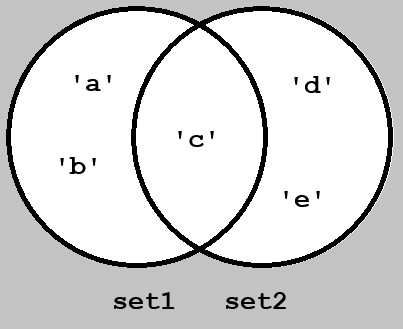

ستها در Python یک نوع دادهی Iterable هستن که ویژگیهای خاصی دارن:
{1, 2, "Alice", "Alex"}
 ستها مثل مجموعهها توی ریاضی هستن. عملهایی مثل اجتماع، اشتراک، تفاضل و ... رو روی ستها میشه اعمال کرد. اعمالی که میشه روی set ها انجام داد:
|:
set1 = {'a', 'b', 'c'}
set2 = {'c', 'd', 'e'}
print(set1 | set2) # set1.union(set2)
#>> {'e', 'b', 'a', 'd', 'c'}
&:
set1 = {'a', 'b', 'c'}
set2 = {'c', 'd', 'e'}
print(set1 & set2) # set1.intersection(set2)
#>> {'c'}
-
set1 = {'a', 'b', 'c'}
set2 = {'c', 'd', 'e'}
print(set1 - set2) # set1.difference(set2)
#>> {'b', 'a'}
^
set1 = {'a', 'b', 'c'}
set2 = {'c', 'd', 'e'}
print(set1 ^ set2) # set1.symmetric_difference(set2)
#>> {'b', 'a', 'd', 'e'}
متدهای intersection_update, difference_update, symmetric_difference_update یه set جدید برنمیگردونن، بلکه set1 رو آپدیت میکنن. مثلا:
set1 = {'a', 'b', 'c'}
set2 = {'c', 'd', 'e'}
set1.symmetric_difference_update(set2) # set1 ^= set2
print(set1)
#>> {'e', 'a', 'b', 'd'}
متدهای مهم دیگهی set ها اینها هستن:
set1 = {'a', 'b', 'c'}
set2 = {'a', 'b'}
print(set1.issubset(set2)) # set1 <= set2
print(set1.issuperset(set2)) # set1 >= set2
#>> False
#>> True
names = {"Alice", "Alex", "Morgan"}
more_names = ["John", "Alex", "Albert"]
names.update(more_names)
print(names)
#>> {'John', 'Albert', 'Morgan', 'Alex', 'Alice'}
توابع در پایتون کدهایی هستند که کارهایی انجام میدن و میتونیم دوباره از اونها استفاده کنیم بدون اینکه نیاز باشه دوباره اونها رو بنویسیم. function ها به مرتب بودن کد و بهینگی اون هم کمک میکنند.
برای ساخت یک function از کلمهی کلیدی def استفاده میکنیم. بعد از اون اسم function رو مینویسیم و جلو اسمش پرانتز باز و بسته میگذاریم و با علامت دو نقطه (:) شروع function رو مشخص میکنیم. کارهایی که قراره function انجام بده رو داخلش و با یک indent (تو رفتگی) مینویسیم.
دستور return مقداری رو برمیگردونه و هرجا داخل یک function به دستور return رسیدیم همونجا کار function تموم میشه و ازش خارج میشه.
توابع ممکنه کاری رو انجام بدن (مثل print که چیزی رو توی خروجی کنسول نشون میده) و یا مقداری رو برگردونه (مثل تابع abs که یک قدر مطلق یک عدد رو برمیگردونه) و یا هردو. function ها به خودی خود کاری انجام نمیدن، و باید صدا زده بشن یا call بشن. برای صدا زدن یک تابع اسم تابع رو با پرانتز جلوش مینویسیم.
برای مثال تابع say_hello زیر پیغام Hello رو توی خروجی چاپ میکنه و دوبار این تابع رو صدا زدیم:
def say_hello():
print("Hello")
say_hello()
say_hello()
#>> Hello
#>> Hello
و تابع زیر فقط پیغام Hello, how are you? رو برمیگردونه:
def say_hello():
return 'Hello, how are you?'
message = say_hello()
print(message)
#>> Hello, how are you?
میشه به یه تابع یک یا چند تا پارامتر داد. این پارامترها ورودیهای تابع هستند که میتونه ازشون استفاده کنه. مثلا function زیر یه ورودی radius از کاربر میگیره و مساحت دایرهای به اون شعاع رو برمیگردونه:
import math
def circle_area(radius):
area = math.pi * radius ** 2
return area
print(circle_area(2))
#>> 12.566370614359172
توی کد بالا تابع circle_area یک پارامتر به اسم radius رو گرفته و با استفاده از این پارامتر مساحت دایره رو محاسبه کرده و در آخر برگردونده. پایینتر تابع رو call کردیم. مقداری که به موقع صدا زدن تابع بهش میدیم رو آرگومان میگیم، پس عدد 2 رو به عنوان آرگومان تابع بهش دادیم.
پارامترهای یک تابع میتونن مقادیر پیشفرض هم داشته باشن. اون پارامترهایی که مقادیر پیشفرض دارن حتما باید بعد از پارامترهای بدون مقدار نوشته بشن. موقع صدا زدن یک تابع میشه پارامتری که مقدار پیشفرض داره به تابع داده نشه، در این صورت تابع مقدار پیشفرض رو استفاده میکنه.
تابع زیر یک عدد و فرجهی رادیکال رو میگیره و رادیکال اون عدد رو محاسبه میکنه. به صورت پیضفرض فرجه رادیکال رو 2 میذاریم:
def root(number, degree=2):
result = number ** (1 / degree)
return result
print(root(4))
print(root(27, 3))
#>> 2.0
#>> 3.0
میشه اسم پارامترها رو هم هنگام صدا زدن یک فانکشن نوشت، در این صورت دیگه ترتیب نوشتن اون پارامتر مهم نیست. توی مثال زیر که یک آدرس وبسایت برامون درست میکنه، موقع صدا زدن فقط مقدار یکی از پارامترهای پیشفرض (extension) رو وارد کردیم و اسمش رو نوشتیم:
def generate_website_address(domain, subdomain="www", extension="com"):
website = f"{domain}.{extension}" if subdomain in (None, "") \
else f"{subdomain}.{domain}.{extension}"
return website
print(generate_website_address("m-sarabi", extension="ir"))
#>> www.m-sarabi.ir
یه function میتونه یه function دیگه رو هم به عنوان پارامتر بگیره. مثلا توی کد زیر، تابع number_tool یک function و یک لیست از اعداد رو از ورودی میگیره.
def sum_numbers(numbers):
return sum(numbers)
def multiply_numbers(numbers):
result = 1
for i in numbers:
result *= i
return result
def number_tool(function, numbers):
return function(numbers)
my_list = [1, 2, 3, 4]
print(number_tool(sum_numbers, my_list))
print(number_tool(multiply_numbers, my_list))
#>> 10
#>> 24
متغیرهایی که داخل یک function یا class تعریف میشن، فقط توی اون تابع یا کلاس قابل استفاده هستن. این متغیرها رو متغیرهای محلی میگیم. مثلا توی کد زیر متغیر message داخل تابع تعریف شده، و اگر بخوایم بیرون تابع ازش استفاده کنیم خطای NameError دریافت میکنیم:
def say_hello():
message = "Hello, how are you?"
return message
print(message)
#>> NameError: name 'message' is not defined
با استفاده از علامت ستاره کنار اسم متغیر میشه تعداد قابل تغییری از آرگومانها رو به تابع داد. بین برنامهنویسها قرارداد شده که معمولا اسم این متغیر رو args میگذارن. مقداری که تابع میگیره یک تاپل هست. به عنوان مثال کد زیر تعدادی عدد میگیره و مجموع اعداد داخلش به توان power رو برمیگردونه:
def sum_square(*args, power=1):
result = 0
for i in args: # (2, 3, 4) in this example
result += i ** power
return result
print(sum_square(2, 3, 4, power=3)) # 2 ** 3 + 3 ** 3 + 4 ** 3
#>> 99
همچنین با استفاده از **kwargs (اینجا هم اسم kwargs میتونه هرچی باشه، ولی قرارداده که این باشه) میشه یک تعداد آرگومانها رو به صورت کلید و مقدار به function داد. چیزی که تابع دریافت میکنه یک دیکشنری از این کلید و مقدارهاست.
توی مثال پایین از **kwargs استفاده کردیم:
def print_properties(**kwargs):
# kwargs in this example:
# {'name': 'Mohammad', 'surname': 'Sarabi', 'hobbies': 'Programming, Art'}
for key, value in kwargs.items():
print(f"{key}: {value}")
print_properties(name="Mohammad", surname="Sarabi", hobbies="Programming, Art")
#>> name: Mohammad
#>> surname: Sarabi
#>> hobbies: Programming, Art
میشه به جای چند آرگومان برای *args یک لیست به تابع داد، و یا به جای **kwargs یک دیکشنری داد. برای این کار به ترتیب از عملگرهای * و ** قبل از لیست یا دیکشنری استفاده میکنیم. به عنوان مثال، جمع اعداد در مثال تابع sum_square رو به این شکل میشه نوشت:
def sum_square(*args, power=1):
result = 0
for i in args: # (2, 3, 4) in this example
result += i ** power
return result
numbers = [2, 3, 4]
print(sum_square(*numbers, power=3)) # 2 ** 3 + 3 ** 3 + 4 ** 3
# >> 99
معمولا کدهای یک پروژه داخل چندین فایل مختلف هستند که در ارتباطند. برای استفاده از کدهای یک فایل داخل یک فایل دیگه از import و بعد اسم اون فایل به شکل زیر استفاده میکنیم:
import filename
مثلا فایلی داریم به اسم geometry_stuff که دو تا تابع زیر داخلش هستن:
def circle_area(radius):
pi = 3.1416
return pi * radius ** 2
def square_area(length):
return length ** 2
داخل یک فایل دیگه میخوایم از این دو تابع استفاده کنیم به این شکل اون فایل رو import میکنیم و از توابع داخلش استفاده میکنیم:
import geometry_stuff
print(temp.circle_area(2))
print(temp.square_area(2))
#>> 12.5664
#>> 4
اگر بخوایم چیزهای داخل یک فایل رو import کنیم. برای اینکار به شکل زیر از from استفاده میکنیم. در این صورت دیگه موقع استفاده از اونا اسم فایل رو هم نمینویسیم:
from geometry_stuff import *
print(circle_area(2))
print(square_area(2))
#>> 12.5664
#>> 4
و اگر بخوایم از چیزای داخل یک فایل فقط بعضیها رو import کنیم به جای ستاره اسم اونها رو مینویسیم:
from geometry_stuff import square_area
print(square_area(2))
#>> 4